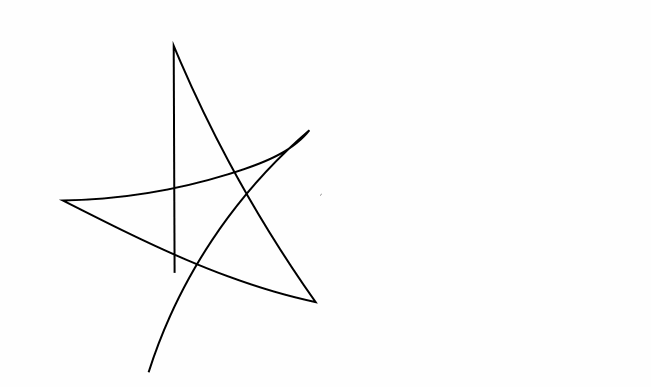

Exciting news, I animated my signature and I feel like all the hours I spent perfecting my signature when I was a fame-obsessed 15 year-old came in handy.

I achieved this animation by creating my signature with the pencil tool in Adobe Illustrator. I then saved it as an .svg file and copied the svg code into a text editor.
From there I assigned unique classes to all the paths in my signature and added styling. The styling included adding a “stroke-dasharray” to each path class, this gave a length to each path, and I also added sequential keyframe animations.
Do you want to animate your signature? Follow this tutorial from Envato’s Tuts+ step by step, and you’ll have your own animated signature!
There are so many things that I want to learn in the realm of web design. I have at least 80 tutorials bookmarked, which span a variety of programming languages, design styles and animations. I’ll keep sharing my experiments :) .